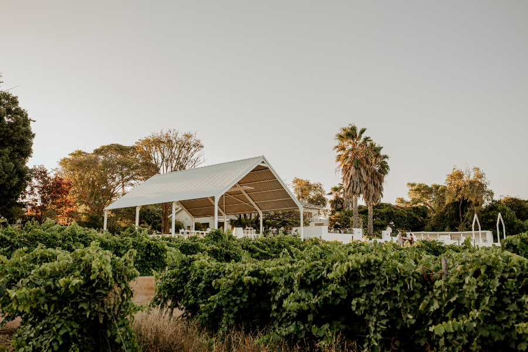
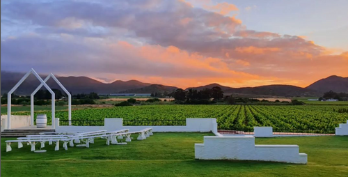
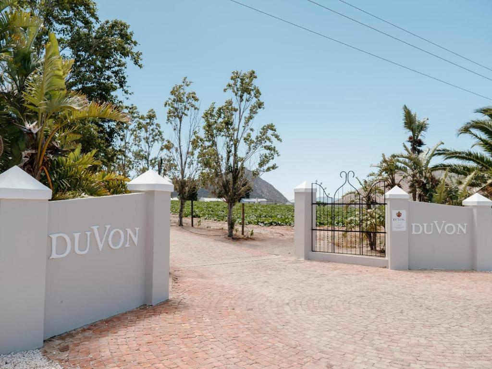

Robertson · Wes-Kaap


Set among the vines of the Robertson valley, Duvon is a working wine estate with an open chapel that looks out over the mountains, and a pavilion built for long summer evenings. We could not imagine a more fitting place to begin our marriage.
Finding us
Directions are a guide only. Please confirm your route on the day. [Placeholder, swap for exact directions]